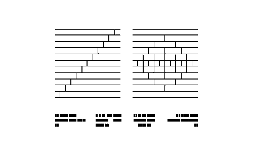
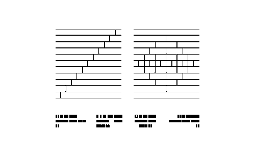

Macian is a CSS framework inspired by and based on Tachyons. It features a set of customisable utility classes.
8L2BR1 38.9 28.4D 10.5V
Macian is a CSS framework inspired by and based on Tachyons. It features a set of customisable utility classes.
